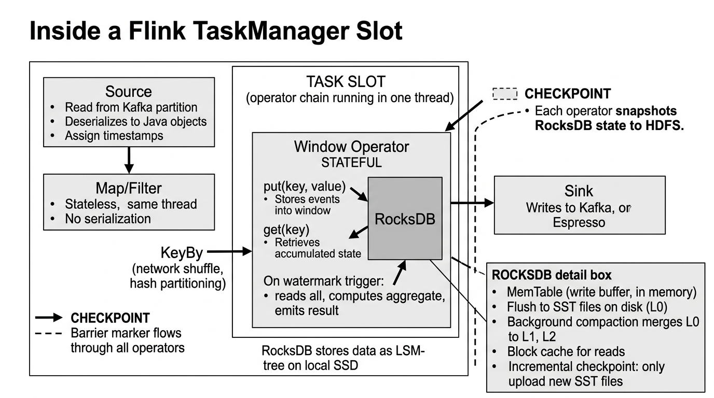
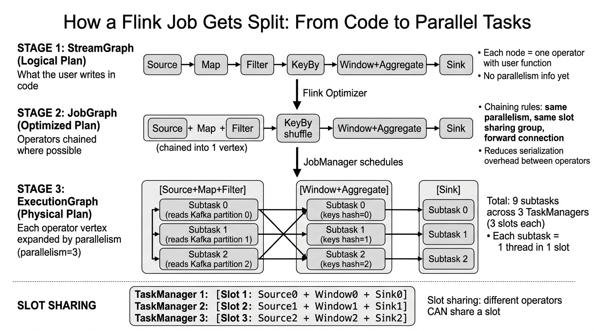
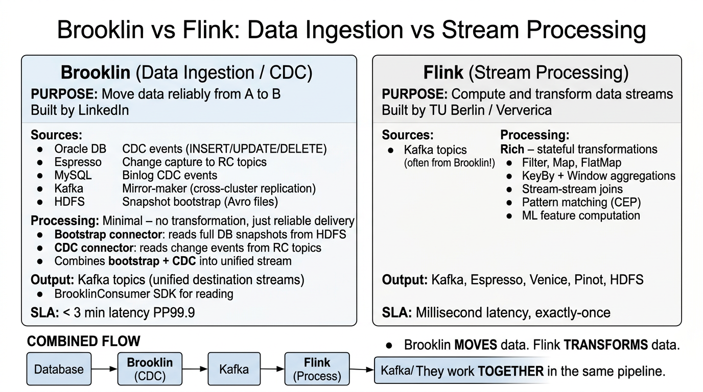
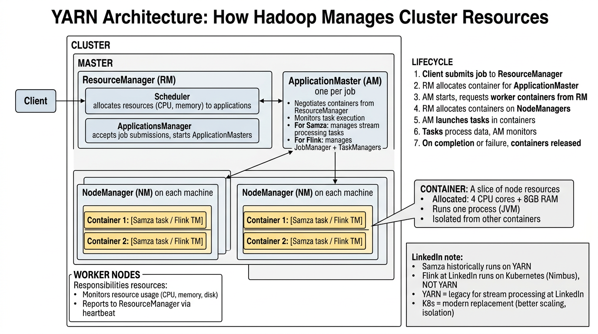

Table of Contents
- What Is Apache Flink?
- Flink Core Architecture
- How Flink Gets Data
- Inside a Flink Box: Operators, State & RocksDB
- How a Job Gets Split into Parallel Tasks
- Brooklin vs Flink: Ingestion vs Processing
- YARN: The Legacy Resource Manager
- Writing Flink Jobs: Code Examples & Use Cases
- Flink at LinkedIn: LI-Flink Platform
- Flink on Kubernetes (Nimbus)
- Flink vs Samza: Side-by-Side Comparison
- Flink Dependencies & Build System
- Flink Outage Case Study: prod-lor1-k8s-5
- Operator Code Analysis & Bugs
- Lessons Learned & Recommendations
- LinkedIn Technology Mapping & Interview Questions
What Is Apache Flink?
Apache Flink is a distributed stream and batch processing engine designed for stateful computations over unbounded (streaming) and bounded (batch) data. Unlike micro-batch systems, Flink processes records one at a time as they arrive, enabling true low-latency stream processing with exactly-once state consistency.
True Streaming
Processes each event individually as it arrives, not in mini-batches. Sub-second latency for real-time applications.
Stateful Processing
Built-in state management with RocksDB. Operators maintain state across events for windowing, joins, and aggregations.
Exactly-Once Semantics
Distributed snapshots via checkpoint barriers guarantee no data loss or duplication, even during failures.
Core Concepts
- DataStream: The fundamental abstraction — a continuous flow of records of a specific type.
- Operators: Transformations applied to DataStreams —
map,filter,keyBy,window,join,process. - Dataflow Graph: A DAG (Directed Acyclic Graph) of operators that defines the processing pipeline.
- Event Time: Processing based on timestamps embedded in events, not wall-clock time. Handles out-of-order events via watermarks.
- Watermarks: Special markers that flow through the stream indicating "all events up to timestamp T have arrived."
- Windows: Group events by time (tumbling, sliding, session) or count for bounded aggregation over unbounded streams.
- Savepoints: Manually triggered, portable snapshots for versioned job upgrades, A/B testing, and migration.
What Flink Is Used For
Real-Time Analytics
- Feed activity features ingestion
- Real-time metrics aggregation
- Ads calibration nearline processing
- Customer search indexing
Data Integration
- Kafka-to-Pinot ingestion pipelines
- CDC (Change Data Capture) processing
- Stream-to-table materialization
- Cross-system data synchronization
Flink Core Architecture

Architecture Walkthrough
- Client submits a Flink application (JAR or SQL) to the cluster. The application code defines the dataflow graph.
- Dispatcher receives the job, starts a new JobMaster for the job, and provides the REST interface for job submission.
- ResourceManager manages TaskManager slots — requests new TaskManagers from the cluster manager (K8s/YARN) when needed.
- JobMaster manages the execution of a single job's dataflow graph. It schedules operators to TaskManager slots and coordinates checkpoints.
- TaskManagers are the worker processes. Each has a fixed number of task slots, each slot runs one parallel operator chain (subtask).
- Data flows between operators via network buffers.
keyByoperations partition data by key across TaskManagers (network shuffle). - Checkpoint Coordinator periodically injects barrier markers into the source streams. When a barrier reaches an operator, the operator snapshots its state to the state backend.
- On failure, the JobManager restores all operators from the latest completed checkpoint, ensuring exactly-once state consistency.
Component Deep Dive
JobManager (Master Process)
The JobManager is the brain of a Flink cluster. It runs three key components:
| Component | Role | Details |
|---|---|---|
| Dispatcher | Job submission gateway | Receives jobs, spawns JobMasters, serves the Flink Web UI |
| ResourceManager | Slot management | Tracks available slots across all TaskManagers, requests new containers from K8s/YARN |
| JobMaster | Per-job execution | Converts dataflow graph to execution graph, schedules tasks to slots, coordinates checkpoints |
In production, the JM runs as a single pod with HA via ZooKeeper or Kubernetes leader election. If the JM crashes, a standby takes over and restores from the latest checkpoint.
TaskManager (Worker Process)
TaskManagers execute the actual data processing. Each TM has a configurable number of task slots:
- Each slot runs one subtask (parallel instance of an operator or operator chain)
- Slots share the TM's JVM heap, off-heap memory, and managed memory (for RocksDB)
- A job with parallelism=12 and 3 TaskManagers (4 slots each) uses exactly 12 slots
- Operators are chained when possible — e.g., a source → map → filter chain runs in a single slot as one task, avoiding serialization overhead
Checkpointing & State Backends
| State Backend | State Storage | Checkpoint Storage | Best For |
|---|---|---|---|
HashMapStateBackend | JVM Heap | JobManager / HDFS | Small state, development/testing |
EmbeddedRocksDBStateBackend | RocksDB on local disk | HDFS / S3 | Large state, production (recommended) |
At LinkedIn, production jobs use RocksDB with checkpoints stored on HDFS. Checkpoint intervals are typically 1-5 minutes depending on state size and acceptable recovery time.
How Flink Gets Data

Data Flow Walkthrough
- Data Sources feed events into Flink via connectors. Kafka is the primary source at LinkedIn.
- Flink SQL or DataStream API defines transformations: filtering, joining, windowing, aggregation.
- State is maintained in RocksDB for stateful operators (joins, windows, counters).
- Checkpoints periodically snapshot state to HDFS for fault tolerance.
- Data Sinks write processed results to downstream systems (Kafka, Espresso, Venice, Pinot).
Source Connectors at LinkedIn
| Source | Type | How It Works | Use Case |
|---|---|---|---|
| Kafka | Primary streaming source | Flink's KafkaSource connector consumes from Kafka topics. Each source subtask reads from one or more partitions. Offsets are committed as part of checkpoints for exactly-once. |
Events, change streams, activity logs, metrics |
| Brooklin | Change Data Capture (CDC) | Brooklin captures changes from Espresso (LinkedIn's NoSQL store) and publishes them to Kafka. Flink reads the change events from Kafka topics created by Brooklin. | Database change processing, derived views |
| Espresso | Lookup / enrichment | Flink uses async I/O or temporal table joins to look up data from Espresso during stream processing. Used for enriching stream events with profile or entity data. | Enrichment joins, dimension lookups |
| Couchbase | Cache lookup | Low-latency key-value lookups for real-time feature enrichment during stream processing. | Feature serving, session data |
| HDFS | Batch / bounded source | Flink reads files from HDFS for batch processing or hybrid batch-stream pipelines. | Historical data, model parameters, reference data |
Sink Connectors at LinkedIn
| Sink | Purpose | Integration Pattern |
|---|---|---|
| Kafka | Downstream events, enriched streams | Two-phase commit sink for exactly-once delivery |
| Espresso | Processed results to primary OLTP store | Upsert writes with at-least-once + idempotent dedup |
| Venice | Precomputed derived data store | Batch or near-real-time pushes for serving layer |
| Pinot | OLAP analytics queries | Kafka topic → Pinot real-time ingestion table |
| HDFS | Data lake, archival, compliance | Rolling file sink with checkpointed commits |
Flink SQL: The Declarative API
LinkedIn's Managed Flink SQL Platform (go/flinksql) allows users to write stream processing jobs using standard SQL, replacing the need for Java code in many cases:
-- Example: Aggregate click events per member per hour
CREATE TABLE click_events (
member_id BIGINT,
event_type STRING,
event_time TIMESTAMP(3),
WATERMARK FOR event_time AS event_time - INTERVAL '5' SECOND
) WITH (
'connector' = 'kafka',
'topic' = 'click-events',
'properties.bootstrap.servers' = 'kafka-broker:9092',
'format' = 'avro'
);
CREATE TABLE click_aggregates (
member_id BIGINT,
window_start TIMESTAMP(3),
click_count BIGINT
) WITH (
'connector' = 'kafka',
'topic' = 'click-aggregates',
'format' = 'avro'
);
INSERT INTO click_aggregates
SELECT
member_id,
TUMBLE_START(event_time, INTERVAL '1' HOUR) AS window_start,
COUNT(*) AS click_count
FROM click_events
WHERE event_type = 'CLICK'
GROUP BY member_id, TUMBLE(event_time, INTERVAL '1' HOUR);Inside a Flink Box: Operators, State & RocksDB
When people say "Flink box," they mean what's running inside each TaskManager slot. This is where the actual data processing happens. Let's open it up and see exactly what's inside.

What's Inside a Task Slot
Each task slot is essentially one thread running an operator chain. Here's what happens to every record:
Record Lifecycle: From Kafka to Sink
- Source Operator reads raw bytes from a Kafka partition. It deserializes them (Avro/JSON/Protobuf) into Java objects and stamps each record with an event timestamp.
- Map/Filter operators (if chained) run in the same thread with zero serialization cost. A map transforms each record; a filter drops records that don't match a predicate.
- KeyBy is a network shuffle. It hashes a field (e.g.,
member_id) and sends the record over TCP to the TaskManager that owns that key range. This is the expensive step — it involves serialization, network I/O, and deserialization. - Window/Aggregate operator receives keyed records and is stateful. It stores incoming records in RocksDB under the key, accumulates them over a time window, and when the watermark says "window is complete," it reads all accumulated records, computes the aggregate (sum, count, max), and emits the result.
- Sink operator takes the output record, serializes it, and writes it to the destination (Kafka topic, Espresso table, etc.). On checkpoint completion, it commits Kafka offsets and flushes pending writes.
How RocksDB Gets Data (and What It Emits)
RocksDB is an embedded key-value store that runs inside each stateful operator. It's not a separate service — it's a C++ library linked via JNI into the Flink JVM process.
How data gets INTO RocksDB
// When a record arrives at a keyed window operator:
// 1. Flink extracts the key (e.g., member_id = 12345)
// 2. Flink calls RocksDB put():
rocksDB.put(
key: [member_id=12345, window=2026-04-05T10:00],
value: [serialized record: {clicks: 1, impressions: 3}]
);
// RocksDB internally:
// → Writes to MemTable (in-memory write buffer, ~64MB)
// → When MemTable is full, flushes to SST file on local SSD (Level 0)
// → Background compaction merges L0 → L1 → L2 (sorted, deduplicated)How data comes OUT of RocksDB
// When a watermark triggers a window to fire:
// 1. Flink scans all records for this window:
Iterator iter = rocksDB.newIterator();
iter.seek([member_id=12345, window=2026-04-05T10:00]);
// 2. Reads all matching records from RocksDB:
// → First checks Block Cache (in-memory LRU cache)
// → If miss, reads from SST files on SSD
// → Returns deserialized Java objects
// 3. Applies aggregate function:
int totalClicks = 0;
while (iter.hasNext() && iter.key().inWindow()) {
totalClicks += iter.value().clicks;
}
// 4. EMITS result downstream to the Sink operator:
emit(new Result(memberId=12345, window="10:00-11:00", clicks=totalClicks));RocksDB Storage Architecture (LSM-Tree)
| Layer | Location | Size | Purpose |
|---|---|---|---|
| MemTable | JVM off-heap memory | ~64MB per CF | Write buffer — all writes go here first (fast) |
| Block Cache | JVM off-heap memory | Configurable | LRU read cache for recently accessed SST blocks |
| L0 SST Files | Local SSD | Varies | Flushed MemTables — unsorted, may overlap |
| L1-L6 SST Files | Local SSD | Grows 10x per level | Sorted, non-overlapping — created by compaction |
| Checkpoint | HDFS (remote) | Full state copy | Incremental: only new SST files uploaded since last checkpoint |
Where Is State Stored?
During Normal Operation
State lives in RocksDB on the local SSD of the TaskManager node. RocksDB is embedded in the Flink process (not a separate database). Each keyed operator has its own RocksDB instance. State is local, fast, and ephemeral (lost if the node dies).
During Checkpoints
Periodically (e.g., every 1-5 minutes), Flink snapshots all RocksDB state to HDFS (remote distributed storage). This is the durable copy. On failure, Flink restores from the latest checkpoint on HDFS. Incremental checkpoints only upload new SST files, making them fast.
Stateless vs Stateful Operators
| Operator Type | Uses RocksDB? | Examples | What It Does |
|---|---|---|---|
| Stateless | No | map, filter, flatMap | Transforms each record independently. No memory between records. |
| Keyed Stateful | Yes | keyBy().window(), keyBy().process() | Accumulates state per key. RocksDB stores: window contents, counters, join buffers. |
| Operator State | Optional | Kafka source (offset tracking) | State per parallel subtask (not per key). Can use heap or RocksDB. |
How a Job Gets Split into Parallel Tasks
When you submit a Flink job, your code goes through three compilation stages before it runs on the cluster. Understanding this explains how one job becomes hundreds of parallel tasks.

Stage 1: StreamGraph (Logical Plan)
Your code defines a chain of operators: Source → Map → Filter → KeyBy → Window → Sink. This is the StreamGraph — a logical representation with no parallelism information. Each node is one operator with your user function attached.
Stage 2: JobGraph (Optimized Plan)
Flink's optimizer chains operators that can run in the same thread. Chaining happens when:
- Operators have the same parallelism
- They're in the same slot sharing group
- They have a forward connection (no shuffle/keyBy between them)
Example: Source + Map + Filter become one chained vertex. This eliminates serialization/deserialization between them — records stay as Java objects in the same thread. The KeyBy breaks the chain because it requires a network shuffle.
Stage 3: ExecutionGraph (Physical Plan)
Each vertex in the JobGraph is expanded by its parallelism. If parallelism=3:
// With parallelism = 3:
[Source+Map+Filter] → 3 subtasks (each reads 1 Kafka partition)
Subtask 0: reads partition 0
Subtask 1: reads partition 1
Subtask 2: reads partition 2
↓ KeyBy (hash partition by member_id) ↓
[Window+Aggregate] → 3 subtasks (each owns a key range)
Subtask 0: keys where hash(key) % 3 == 0
Subtask 1: keys where hash(key) % 3 == 1
Subtask 2: keys where hash(key) % 3 == 2
↓ Forward ↓
[Sink] → 3 subtasks
Subtask 0, 1, 2
Total: 9 subtasks = 9 threads across the clusterSlot Sharing: How Subtasks Map to Slots
By default, Flink uses slot sharing — subtasks from different operators can share the same slot. This means one slot runs a complete pipeline slice:
| TaskManager | Slot | What's Running |
|---|---|---|
| TM 1 | Slot 1 | Source0 + Window0 + Sink0 (all in one JVM thread pool) |
| TM 2 | Slot 2 | Source1 + Window1 + Sink1 |
| TM 3 | Slot 3 | Source2 + Window2 + Sink2 |
This is why a job with parallelism=3 needs only 3 slots (not 9), even though it has 9 subtasks. Each slot runs one "pipeline slice" from source to sink.
The JobManager and TaskManager Roles in This
JobManager = The Brain
- Compiles your code through all 3 stages (StreamGraph → JobGraph → ExecutionGraph)
- Schedules subtasks to TaskManager slots
- Coordinates checkpoints — tells all operators when to snapshot
- Handles failures — detects failed TaskManagers, reschedules subtasks, restores from checkpoints
- Serves the Web UI at port 8081
- Runs as 1 pod on Kubernetes (with HA standby)
TaskManager = The Muscle
- Executes subtasks — runs your user functions (map, filter, aggregate)
- Manages state — owns the RocksDB instances for keyed operators
- Exchanges data — sends records to other TMs during shuffles (keyBy)
- Reports health to JobManager via heartbeats
- Performs checkpoints — snapshots RocksDB to HDFS on command
- Runs as N pods on Kubernetes (N = parallelism / slots-per-TM)
Brooklin vs Flink: Ingestion vs Processing
Brooklin and Flink are completely different tools that work together in the same data pipeline. Think of it as: Brooklin is the truck that delivers raw materials; Flink is the factory that transforms them into products.

What Is Brooklin?
Brooklin is LinkedIn's streaming ingestion and Change Data Capture (CDC) platform. Its sole job is to reliably move data from sources to destinations with minimal transformation.
Brooklin Does Two Things:
- CDC (Change Data Capture): Watches databases (Espresso, Oracle, MySQL) for INSERT/UPDATE/DELETE operations and publishes each change as an event to a Kafka topic called an "RC topic" (Record Change topic).
- Bootstrap: Takes periodic full database snapshots, stores them as Avro files on HDFS, and makes them available so consumers can initialize their state from a complete snapshot before switching to the live CDC stream.
Side-by-Side Comparison
| Aspect | Brooklin | Flink |
|---|---|---|
| Purpose | Move data from A to B (ingestion) | Transform and compute on data streams |
| Built By | TU Berlin / Ververica | |
| Processing | Minimal — no transformation, just delivery | Rich — filter, join, window, aggregate, ML |
| State | Stateless (just moves records) | Stateful (RocksDB for windows, joins, counters) |
| Input Sources | Espresso, Oracle, MySQL, Kafka, HDFS | Kafka topics (often from Brooklin!) |
| Output | Kafka topics | Kafka, Espresso, Venice, Pinot, HDFS |
| SLA | < 3 min latency PP99.9 | Millisecond latency, exactly-once |
| Analogy | Postal service (delivers mail) | Factory (processes raw materials) |
How They Work Together
// Typical pipeline at LinkedIn:
Espresso DB (member profiles)
↓ Brooklin CDC captures INSERT/UPDATE/DELETE
↓ Publishes to Kafka topic "member-changes"
Kafka topic "member-changes"
↓ Flink reads from this topic
↓ Joins with click-stream data from another Kafka topic
↓ Computes features: "member X clicked Y items in last hour"
↓ Writes to Venice (serving store for ML models)
Venice serves features to ML models for feed rankingFlink answers: "What does this stream of changes mean?" (aggregations, joins, patterns).
YARN: The Legacy Resource Manager
YARN (Yet Another Resource Negotiator) is part of Hadoop. It's the system that decides which machines run which jobs in a cluster. Think of YARN as the office manager who assigns desks (resources) to employees (applications).

How YARN Works
YARN Job Lifecycle
- Client submits job to the ResourceManager (RM) — the cluster master. "I need to run a Flink/Samza job."
- RM allocates a container on one of the worker nodes for the ApplicationMaster (AM). The AM is the per-job coordinator.
- ApplicationMaster starts and says: "I need 10 containers with 4 CPU cores and 8GB RAM each for my TaskManagers."
- RM checks available resources across all NodeManagers and allocates containers on machines that have capacity.
- AM launches tasks inside the containers. For Flink, this means starting TaskManager JVM processes. For Samza, this means starting stream processing tasks.
- Tasks process data. AM monitors health, replaces failed containers, and reports progress.
- On completion or failure, containers are released back to the cluster.
YARN Components Explained
| Component | Count | Role | Analogy |
|---|---|---|---|
| ResourceManager | 1 per cluster | Global scheduler — allocates CPU/memory to applications | Office manager |
| NodeManager | 1 per machine | Local agent — monitors resource usage, launches containers | Floor supervisor |
| ApplicationMaster | 1 per job | Per-job coordinator — requests containers, monitors tasks | Project manager |
| Container | Many per machine | A slice of a machine's resources (CPU + RAM) running one process | A desk with a computer |
Does LinkedIn Use YARN for Flink?
Samza on YARN (Legacy)
Historically, Samza ran on YARN. The Samza ApplicationMaster managed stream processing containers. YARN handled resource allocation and container lifecycle. Some Samza workloads still run on YARN today.
Flink on Kubernetes (Current)
At LinkedIn, Flink runs on Kubernetes (Nimbus), NOT on YARN. The Flink Operator replaces YARN's ApplicationMaster. K8s Deployments replace YARN Containers. This gives better isolation, scaling, and integration with LinkedIn's cloud-native infrastructure.
YARN vs Kubernetes for Stream Processing
| Feature | YARN | Kubernetes |
|---|---|---|
| Resource unit | Container (CPU + RAM) | Pod (CPU + RAM + GPU + storage) |
| Isolation | JVM-level (same OS, shared libs) | Container-level (separate filesystem, network) |
| Scaling | Request more containers from RM | HPA / update Deployment replicas |
| Failure recovery | AM detects, requests new container | K8s controller restarts pod automatically |
| Ecosystem | Hadoop-centric | Cloud-native, everything runs on K8s |
| Networking | Host networking (ports conflicts) | Pod networking (each pod gets its own IP) |
| LinkedIn status | Legacy | Current standard |
Writing Flink Jobs: Code Examples & Use Cases
If you want to use Flink, you have two choices: write SQL (easier, recommended for most cases) or write Java/Scala code using the DataStream API (more powerful, more complex).
Option 1: Flink SQL (Recommended for Most Use Cases)
You write standard SQL statements. Flink handles all the complexity of distributed execution, state management, and fault tolerance. At LinkedIn, this runs on the Managed Flink SQL Platform (go/flinksql).
-- USE CASE: Real-time click aggregation per member per hour
-- This is all you write. Flink handles everything else.
-- Step 1: Define the source table (reads from Kafka)
CREATE TABLE clicks (
member_id BIGINT,
page_url STRING,
click_time TIMESTAMP(3),
WATERMARK FOR click_time AS click_time - INTERVAL '5' SECOND
) WITH (
'connector' = 'kafka',
'topic' = 'user-clicks',
'properties.bootstrap.servers' = 'kafka:9092',
'format' = 'avro'
);
-- Step 2: Define the sink table (writes to Kafka)
CREATE TABLE hourly_clicks (
member_id BIGINT,
hour_start TIMESTAMP(3),
total_clicks BIGINT,
PRIMARY KEY (member_id, hour_start) NOT ENFORCED
) WITH (
'connector' = 'upsert-kafka',
'topic' = 'hourly-click-counts',
'key.format' = 'json',
'value.format' = 'avro'
);
-- Step 3: Write the processing logic
INSERT INTO hourly_clicks
SELECT
member_id,
TUMBLE_START(click_time, INTERVAL '1' HOUR) AS hour_start,
COUNT(*) AS total_clicks
FROM clicks
GROUP BY member_id, TUMBLE(click_time, INTERVAL '1' HOUR);Option 2: DataStream API (Java)
More powerful, more flexible, but more code. Use this when SQL can't express your logic (complex event processing, custom windowing, ML feature engineering).
// USE CASE: Detect fraud - alert if a member clicks > 100 times in 5 minutes
public class FraudDetector {
public static void main(String[] args) throws Exception {
// 1. Create the execution environment
StreamExecutionEnvironment env =
StreamExecutionEnvironment.getExecutionEnvironment();
env.enableCheckpointing(60000); // checkpoint every 60s
// 2. Read from Kafka
KafkaSource<ClickEvent> source = KafkaSource
.<ClickEvent>builder()
.setBootstrapServers("kafka:9092")
.setTopics("user-clicks")
.setValueOnlyDeserializer(new ClickEventDeserializer())
.build();
DataStream<ClickEvent> clicks = env.fromSource(
source, WatermarkStrategy
.<ClickEvent>forBoundedOutOfOrderness(Duration.ofSeconds(5))
.withTimestampAssigner((event, ts) -> event.getTimestamp()),
"Kafka Source"
);
// 3. Key by member, window 5 minutes, count clicks
DataStream<Alert> alerts = clicks
.keyBy(click -> click.getMemberId()) // partition by member
.window(TumblingEventTimeWindows.of(Time.minutes(5))) // 5-min window
.aggregate(new ClickCounter()) // count clicks
.filter(result -> result.getCount() > 100) // threshold
.map(result -> new Alert(result.getMemberId(),
"Suspicious: " + result.getCount() + " clicks in 5 min"));
// 4. Write alerts to Kafka
alerts.sinkTo(KafkaSink.<Alert>builder()
.setBootstrapServers("kafka:9092")
.setRecordSerializer(new AlertSerializer("fraud-alerts"))
.build());
// 5. Execute!
env.execute("Fraud Detection Pipeline");
}
}When to Use What
| Use Case | Approach | Why |
|---|---|---|
| Aggregate metrics per window | Flink SQL | Simple GROUP BY + TUMBLE/HOP window |
| Stream-to-table joins | Flink SQL | SQL temporal joins are concise |
| Kafka → Pinot ingestion | Flink SQL | Just SELECT + INSERT, minimal logic |
| Fraud / anomaly detection | DataStream API | Complex pattern matching, custom state |
| ML feature engineering | DataStream API | Custom aggregations, async lookups, sliding windows |
| Multi-stream joins with custom logic | DataStream API | CoProcessFunction for fine-grained control |
| CDC processing | Flink SQL | Built-in CDC format support (debezium, canal) |
| ETL pipelines | Flink SQL | SELECT/INSERT with transformations |
Top Use Cases at LinkedIn
Feed Features
Compute real-time engagement features (clicks, likes, shares per post) for feed ranking ML models.
Pinot Ingestion
Transform and route Kafka events into Apache Pinot OLAP tables for real-time analytics dashboards.
Ads Calibration
Nearline processing of ad impression/click streams to calibrate ML models for ad targeting accuracy.
Search Indexing
Process entity changes from Brooklin CDC and update search indices in near-real-time.
Data Sync
Synchronize data between Espresso, Venice, and other stores using CDC events processed through Flink.
Metrics Aggregation
Aggregate raw metric events into time-windowed summaries for monitoring and alerting pipelines.
Flink at LinkedIn: LI-Flink Platform
LinkedIn maintains LI-Flink, a customized fork of Apache Flink. The Flink platform team (under Data Infra, Streams Infrastructure) manages the internal distribution, release process, and integration with LinkedIn infrastructure.
Repository Structure
| Branch | Purpose |
|---|---|
master | Mirror of upstream Apache Flink master branch |
release-* | Mirror of upstream release branches (e.g., release-1.18) |
li-release-* | LinkedIn-specific modifications on top of release branches. Contains LinkedIn patches, internal connector code, and custom configurations. |
Release Process (ELR)
LinkedIn uses an External Library Release (ELR) process to publish Flink artifacts:
- Upstream Flink releases are merged into
li-release-*branches - LinkedIn-specific patches (connectors, security, monitoring) are applied
- Artifacts are built with Maven and published to LinkedIn's internal Artifactory
- Certification tests validate compatibility with internal systems (Kafka, Espresso, Brooklin)
- Release is promoted to production after passing certification
Key LinkedIn Customizations
Custom Connectors
- LinkedIn Kafka connector with internal auth (TLS + ACLs)
- Espresso source/sink connectors
- Brooklin CDC connector
- Venice push job connector
- Couchbase lookup connector
Platform Integrations
- InGraphs metrics reporting
- IRIS alerting integration
- Internal authentication (k8s-lare certificates)
- GPFS shared filesystem for JARs
- Nimbus deployment integration
Managed Flink SQL Platform
The managed platform provides:
- Catalog management: Flink SQL catalogs for Kafka topics, Espresso tables, and Couchbase stores
- Job lifecycle management: Deploy, monitor, stop, restart jobs via Nimbus/SDS
- Dashboard & monitoring: Built-in dashboards for throughput, latency, checkpoint duration, backpressure
- Config management: Centralized configuration via RFC-driven config management system
- Debugging tools: Log access, flame graphs, thread dumps, checkpoint history
Flink on Kubernetes (Nimbus)

Deployment Walkthrough
- User submits a Flink job via Nimbus/SDS (Service Deployment System).
- Nimbus instructs the Flink Operator (a Kubernetes custom controller) to create a
FlinkClusterCustom Resource. - The Flink Operator watches for FlinkCluster CRDs and creates 7 child resources: 4 ConfigMaps, 1 Service, 1 JM Deployment, 1 TM Deployment.
- Each Flink pod contains an init container (
k8s-larefor cert setup), the main Flink container (JM or TM), and a metrics sidecar. - The operator monitors
readyReplicason the Deployments and transitions through its state machine until the job reachesFLINKJOBRUNNING. - Nimbus polls the operator for job status, reporting
DEPLOY_IN_PROGRESSorRUNNINGto the deployment system.
Operator State Machine
The Flink Job Operator manages deployments through a five-stage state machine:
FLINKJOBNEWCREATING → FLINKJOBCLUSTERCREATING → FLINKJOBJARUPLOADING
↓
FLINKJOBRUNNING ← FLINKJOBJOBSUBMITTING
If failure at any stage:
→ FLINKJOBFAILED → (delete + recreate) → FLINKJOBNEWCREATINGKubernetes Resources Per Flink Job
| # | Resource | Purpose |
|---|---|---|
| 1 | ConfigMap: flink-config | Flink configuration (flink-conf.yaml, log4j) |
| 2 | ConfigMap: JM scrape | Prometheus scraping config for JobManager |
| 3 | ConfigMap: TM scrape | Prometheus scraping config for TaskManagers |
| 4 | ConfigMap: Auth Service | Authentication and authorization config |
| 5 | Service: JobManager | ClusterIP service exposing JM REST API on port 8081 |
| 6 | Deployment: JobManager | Single-replica deployment for the JM pod |
| 7 | Deployment: TaskManager | Multi-replica deployment for TM pods (parallelism-based) |
Pod Anatomy
Flink Pod Structure
- Init Container:
k8s-lare— Certificate setup and authentication bootstrap. Must complete before main containers start. Image: ~200MB. - Main Container:
flink-main-container— The actual Flink JM or TM process. Image: 2-4 GB (includes application JARs and dependencies). - Sidecar:
metrics-agent— Collects and exports Flink metrics to InGraphs/Prometheus. - Volumes:
flink-config-volume(from ConfigMap), GPFS mount (shared filesystem for JARs and checkpoints).
Image pull policy: IfNotPresent — images are only pulled if not cached on the node. This is critical for understanding the outage scenario.
Flink vs Samza: Side-by-Side Comparison

| Feature | Apache Flink | Apache Samza |
|---|---|---|
| Origin | TU Berlin / Ververica (open source) | Created by LinkedIn (open source) |
| Processing Model | True streaming (record-at-a-time) | Micro-batch (small batch windows) |
| Latency | Milliseconds | Hundreds of milliseconds |
| State Backend | RocksDB, HDFS, Memory (built-in) | RocksDB + Kafka changelog streams |
| Delivery Guarantee | Exactly-once via checkpoint barriers | At-least-once (exactly-once via Beam + dedup) |
| Primary API | Flink SQL (declarative) + DataStream Java | Apache Beam Java SDK |
| SQL Support | Flink SQL (actively developed, GA) | Samza SQL (deprecated, migrating to Flink SQL) |
| Event Time | Native watermark support | Via Apache Beam abstraction |
| Deployment | Kubernetes (Nimbus) via Flink Operator | YARN (legacy) and Kubernetes |
| Fault Tolerance | Distributed snapshots (Chandy-Lamport) | Kafka changelog replay |
| LinkedIn Status | Growing — new SQL workloads | Legacy — existing Beam pipelines |
Why LinkedIn Uses Both
When to Use Flink
- New SQL-based stream processing workloads
- Jobs requiring low-latency, true streaming
- Complex stateful computations (windowing, joins)
- Event-time processing with watermarks
- Replacing existing Samza SQL jobs
When to Use Samza (Beam)
- Existing Beam pipelines (don't migrate if stable)
- Complex custom Java logic beyond SQL
- Jobs deeply integrated with YARN ecosystem
- Pipelines using Beam's multi-language SDK
- Legacy systems not yet scheduled for migration
Key Architectural Differences
State Management
Flink uses embedded state backends (RocksDB runs inside the TaskManager process). State is local and fast. Checkpoints serialize state to distributed storage (HDFS) periodically.
Samza uses changelog-based state. Every state mutation is written to a Kafka changelog topic. On recovery, state is rebuilt by replaying the changelog from the beginning. This is simpler but recovery time is proportional to state size.
Exactly-Once Semantics
Flink achieves exactly-once via distributed snapshots (Chandy-Lamport algorithm). Checkpoint barriers flow through the stream. All operators snapshot their state atomically when they receive a barrier. On failure, all operators roll back to the same consistent snapshot.
Samza provides at-least-once natively. Exactly-once requires application-level idempotency or the Beam exactly-once abstraction (which adds overhead).
Flink Dependencies & Build System
Core Dependencies
| Category | Dependency | Purpose |
|---|---|---|
| Runtime | Java 11+ (JVM) | Flink is a JVM-based framework |
| State | RocksDB (JNI) | Embedded key-value store for operator state |
| Messaging | Apache Kafka | Primary source and sink connector |
| Storage | HDFS / GPFS | Checkpoint and savepoint storage, shared JARs |
| Serialization | Apache Avro, Protobuf | Data serialization for Kafka messages |
| Orchestration | Kubernetes (Nimbus) | Container orchestration and scheduling |
| Operator | Flink K8s Operator | Custom controller managing FlinkCluster CRDs |
| Auth | k8s-lare | Certificate provisioning via init container |
| Build | Apache Maven | Dependency management and artifact building |
| Registry | LinkedIn Artifactory | Internal artifact repository for LI-Flink JARs |
| Monitoring | InGraphs + IRIS | Metrics collection and alerting |
| Deployment | Nimbus/SDS | Service deployment and lifecycle management |
Dependency Chain Risks
- Container Registry → Image pull failures → Pod cannot start
- GPFS → Cannot mount shared filesystem → JARs unavailable
- Kafka → Source/sink connectivity lost → Backpressure or data loss
- HDFS → Checkpoint storage unavailable → Cannot complete checkpoints
- k8s-lare (init container) → Certificate provisioning fails → All pods blocked
- API Server → Operator cannot create/update resources → Job lifecycle stalls
Build & Deploy Pipeline
# 1. Build Flink application
mvn clean package -DskipTests
# 2. Upload JAR to GPFS or container image
docker build -t flink-app:v1.0 .
# 3. Push to LinkedIn container registry
docker push registry.linkedin.com/flink-app:v1.0
# 4. Deploy via Nimbus/SDS
# SDS creates FlinkCluster CR → Flink Operator creates K8s resources
# 5. Monitor job
# go/flinksql dashboard
# InGraphs metrics: throughput, latency, checkpoint durationFlink Outage Case Study: prod-lor1-k8s-5
prod-lor1-k8s-5 experienced a cascading failure that impacted multiple Flink jobs for 10+ hours. This incident reveals critical gaps in the Flink operator's resilience and the dangers of the delete-recreate loop pattern.

Incident Summary
Incident Timeline
Flink pods terminated on existing nodes due to deployment reconcile cycle, node drain, or pod preemption. Pods rescheduled to new nodes that had no cached Flink container images.
Rescheduled pods start pulling images on cold-cache nodes. Each pod needs 3-4 images pulled sequentially (init container blocks everything). Multiple jobs pulling simultaneously congest the registry. Pulls stretch from seconds to 2+ hours.
Concurrently, high pod/ReplicaSet churn from other workloads (t3-discovery-funnel-impression) saturates the API server. Controller GET errors spike. Scheduler bind conflicts delay pod scheduling.
The Flink operator's deployment readiness timeout (5-10 min) expires while images still pulling. Operator reports jobManagerDeploymentStatus: MISSING and throws ClusterDeploymentException. Operator deletes the FlinkCluster and recreates it, killing all in-progress image pulls. Pulls restart from scratch.
Each cycle wastes all prior image pull progress, issues fresh pull requests to congested registry, and creates/deletes 7 K8s resources. Multiple jobs loop simultaneously: feed-activity-features-ingestion reaches Attempt 57, pinot-ingestion reaches Attempt 49.
Cumulative API server load causes informer cache desync. CREATE calls return HTTP 409 AlreadyExists. The operator treats 409 same as 500 (fatal) — triggering immediate retry without backoff. Loop accelerates from 5-10 min/cycle to instant failure.
Two Root Causes
Root Cause 1: Image Pull Latency
- Flink images are 2-4 GB each
- Init container serializes pulls (sum, not max)
- Multiple jobs pulling simultaneously congests registry
imagePullPolicy: IfNotPresentmeans cold nodes do full pulls- Operator's 5-10 min timeout far too short for 2+ hour pulls
- Each delete-recreate kills 80% complete pulls and restarts
Root Cause 2: API Server Saturation
- High pod/RS churn from other workloads saturated API server
- Scheduler bind conflicts delayed Flink pod scheduling
- ReplicaSet controller hot-loops wasted API bandwidth
- CronJob optimistic lock failures produced 409 errors
- Containerd ttrpc race left pods stuck in Terminating
Impact: What Flink Outage Caused at LinkedIn
Data Pipeline Disruption
- Feed activity features — nearline feature ingestion halted for 10+ hours, impacting feed ranking quality
- Pinot ingestion — real-time analytics tables became stale, affecting dashboards and reporting
- Customer search — search index updates stopped, causing stale search results
- Ads calibration — nearline ad model features delayed, impacting ad targeting accuracy
Infrastructure Collateral Damage
- API server overload — the delete-recreate loop generated sustained high API server load, impacting ALL workloads on the cluster
- Registry congestion — repeated image pull requests saturated the container registry
- Scheduler contention — bind conflicts delayed scheduling for non-Flink workloads
- No self-recovery — required manual intervention to break the loop
Affected Flink Jobs
| Job Name | Retry Attempts | Namespace |
|---|---|---|
feed-activity-features-ingestion | 57 | hs-flinksql-* |
pinot-ingestion | 49 | hs-flinksql-* |
actor-interaction-nearline | 14 | hs-flinksql-* |
hs-flinksql-customersearch.i001 | 10+ | hs-flinksql-customersearch-aa66a |
Operator Code Analysis & Bugs
The Delete-Recreate Loop (OnpremFlinkOperatorPlugin.java)
The Flink operator's reconcile loop is the primary amplification mechanism for the outage:
// Simplified pseudocode of the operator's reconcile logic
class BaseFlinkOperatorPlugin {
void reconcile(FlinkCluster cluster) {
if (cluster.state == FLINKJOBCLUSTERCREATING) {
// Check if Deployment is ready
Deployment jmDeploy = getDeployment("jobmanager");
if (jmDeploy.readyReplicas == desiredReplicas) {
transition(FLINKJOBJARUPLOADING);
} else if (elapsedTime > DEPLOYMENT_TIMEOUT) {
// BUG: No visibility into WHY readyReplicas is 0
// Could be: image still pulling (normal, just slow)
// or: actual container crash (real failure)
cluster.state = FAILED;
throw ClusterDeploymentException("Could not create cluster");
}
}
if (cluster.state == FLINKJOBFAILED) {
// BUG: No backoff, no circuit breaker
deleteFlinkCluster(cluster); // kills in-progress image pulls!
createFlinkCluster(cluster); // fresh attempt, possibly new cold node
// 30-60 seconds later, reconcile fires again...
}
}
void createResource(String name, Object spec) {
try {
kubeClient.create(spec);
} catch (ApiException e) {
// BUG: 409 AlreadyExists treated same as 500 InternalServerError
throw new FlinkOperatorException(e); // triggers FAILED state
}
}
}Three Critical Bugs
Bug 1: No Image Pull Awareness
The operator only checks readyReplicas. It cannot distinguish "image still pulling" (just wait) from "container crashed" (real problem). A 15-minute image pull is treated identical to a crash.
Bug 2: 409 = Fatal Error
HTTP 409 AlreadyExists means the resource exists — just fetch it and continue. But the operator treats it same as 500, triggering another delete-recreate cycle. This turned a recoverable cache-desync into a runaway loop.
Bug 3: No Backoff / Circuit Breaker
Each failure triggers retry on the next reconcile interval (30-60s). No exponential backoff, no max-retry limit, no circuit breaker. The operator retries indefinitely, each attempt making things worse.
Deployment Template Gaps
| Missing Feature | Impact | Fix |
|---|---|---|
| No readinessProbe | Deployment relies on container Running state; no validation that Flink actually initialized | Add HTTP readiness probe on :8081/config |
| No startupProbe | K8s cannot distinguish "slow startup" from "failed" — liveness probe may kill pods still starting | Add startup probe with generous failureThreshold |
| No PodDisruptionBudget | All pods can be disrupted simultaneously during node drain, causing mass rescheduling to cold nodes | PDB with maxUnavailable: 1 |
| ConfigMap delete+recreate | During rollout, old TMs lose their mounted ConfigMap causing MountVolume.SetUp failed |
Use in-place ConfigMap updates |
ConfigMap Lifecycle Bug
// Timeline of the ConfigMap issue:
// T=0: Operator deletes old ConfigMap "flink-config-customersearch-i001"
// T=1: Old TaskManager pod still running, kubelet tries to mount ConfigMap
// T=1: "MountVolume.SetUp failed: configmap not found"
// T=2: Kubelet retries with exponential backoff: 500ms → 1s → 2s → ... → 32s
// T=5: Operator creates new ConfigMap with same name but different content
// T=6: New TaskManager pod starts, but old TM is stuck in CrashLoopBackOffLessons Learned & Recommendations
Why the System Could Not Self-Recover
- No exponential backoff: Each failure triggered immediate retry on the next reconcile interval (30-60 seconds).
- No circuit breaker: No mechanism to stop retrying after repeated failures.
- Retry rate exceeded GC rate: Old resources never finished deleting before new CREATE calls conflicted.
- Each retry made things worse: More API server load, more registry pressure, more informer cache lag.
- Multiple jobs in parallel: Each Flink job ran its own independent delete-recreate loop. Combined load was multiplicative.
Recommendations
Immediate
- Increase deployment timeout to 15-20 min
- Add exponential backoff to FLINKJOBFAILED retry
- Pre-pull Flink images via DaemonSet
- Investigate high-churn workloads
Medium-term
- Add 409-specific error handling
- Add readiness + startup probes
- Implement circuit breaker (N failures → stop)
- Pod-level image pull status awareness
- In-place ConfigMap updates
Long-term
- Image pre-staging before FlinkCluster creation
- PodDisruptionBudgets for Flink deployments
- Operator metrics for creation-to-ready latency
- Fix containerd ttrpc race conditions
- API server priority/fairness (APF) settings
Key Takeaways for Distributed System Design
- Always use exponential backoff — Immediate retries under load create positive feedback loops that make failures worse.
- Circuit breakers are essential — Operators/controllers that retry indefinitely will compound cascading failures.
- Distinguish slow from broken — An image pulling for 15 minutes is different from a container crash. Controllers must differentiate.
- Handle 409 AlreadyExists gracefully — In distributed systems, idempotent operations and "create-or-update" patterns prevent cache-desync cascades.
- Delete-recreate is the most expensive retry — Destroying all progress and starting from scratch should be a last resort, not the first response.
- Pre-warm your infrastructure — Cold-cache scenarios (images, DNS caches, connection pools) can multiply startup latency by orders of magnitude.
- PodDisruptionBudgets prevent thundering herds — Without PDBs, node drains can reschedule all pods simultaneously to cold nodes.
LinkedIn Technology Mapping & Interview Questions
LinkedIn Technology Mapping
| Generic Concept | LinkedIn Technology | Role in Flink Ecosystem |
|---|---|---|
| Stream Processing Engine | LI-Flink | LinkedIn's fork of Apache Flink with custom connectors and integrations |
| Message Queue | Kafka | Primary data source and sink for Flink streaming jobs |
| CDC Pipeline | Brooklin | Captures changes from Espresso and feeds them to Kafka for Flink consumption |
| Primary Data Store | Espresso | NoSQL OLTP store; Flink reads for enrichment and writes processed results |
| Derived Data Store | Venice | Read-optimized store for precomputed results from Flink batch/stream jobs |
| OLAP Analytics | Pinot | Real-time analytics; Flink feeds Pinot via Kafka topics |
| Cache | Couchbase | Low-latency lookup connector for Flink enrichment joins |
| Container Orchestration | Nimbus (K8s) | Runs Flink JM/TM pods; Flink Operator manages lifecycle |
| Deployment System | Nimbus/SDS | Service deployment; polls Flink Operator for job status |
| Monitoring | InGraphs | Time-series metrics for Flink throughput, latency, checkpoint duration |
| Alerting | IRIS | Alerts on Flink job health: checkpoint failures, backpressure, lag |
| Configuration | cfg2 | Centralized configuration management for Flink job parameters |
| Shared Filesystem | GPFS | Shared storage for Flink JARs and application artifacts |
| ML Platform | Pro-ML | Flink feeds features to ML models; Pro-ML serves predictions |
| Legacy Stream Engine | Apache Samza | LinkedIn-created; Flink SQL replacing Samza SQL workloads |
Interview Questions
Fundamentals
- Explain how Flink's checkpointing mechanism achieves exactly-once semantics. How does it differ from Kafka's transaction-based exactly-once?
- What is the difference between event time and processing time in Flink? When would you use each?
- How do watermarks work? What happens when events arrive after the watermark (late events)?
- Compare Flink's state backends: MemoryStateBackend vs. RocksDBStateBackend. When would you choose each?
- What is operator chaining in Flink? Why is it important for performance?
Architecture & Design
- You need to process 1M events/sec with exactly-once semantics. Design the Flink pipeline, including source, transformations, and sink. How do you handle backpressure?
- Compare Flink and Samza. Why might a company use both? When would you choose one over the other?
- How does Flink handle failure recovery? Walk through what happens when a TaskManager crashes mid-checkpoint.
- Design a Flink pipeline that joins a high-throughput click stream with user profile data from Espresso. How do you handle the lookup efficiently?
- What are savepoints vs. checkpoints? How would you use savepoints for zero-downtime job upgrades?
Production & Operations
- A Flink job is experiencing high backpressure. Walk through your debugging approach.
- How would you design an auto-scaling mechanism for Flink TaskManagers based on throughput and lag?
- Your Flink operator keeps deleting and recreating FlinkClusters in a loop. What could cause this? How would you fix it?
- Flink pods are being scheduled to cold-cache nodes and image pulls take 2+ hours. What architectural changes would prevent this?
- How would you design a Flink deployment pipeline that guarantees zero-downtime upgrades with exactly-once state preservation?
Deep Dive
- Explain the Chandy-Lamport distributed snapshot algorithm that Flink uses for checkpointing. What are the tradeoffs vs. micro-batching approaches?
- How does Flink handle exactly-once with Kafka sinks? Explain the two-phase commit protocol.
- A Kubernetes operator treats HTTP 409 (AlreadyExists) as a fatal error. What cascading effects can this cause? How should it be handled?
- Design a system to pre-warm container images on Kubernetes nodes before scheduling Flink pods. Consider registry bandwidth, storage, and freshness.
- How would you implement a circuit breaker in a Kubernetes operator to prevent runaway reconciliation loops?